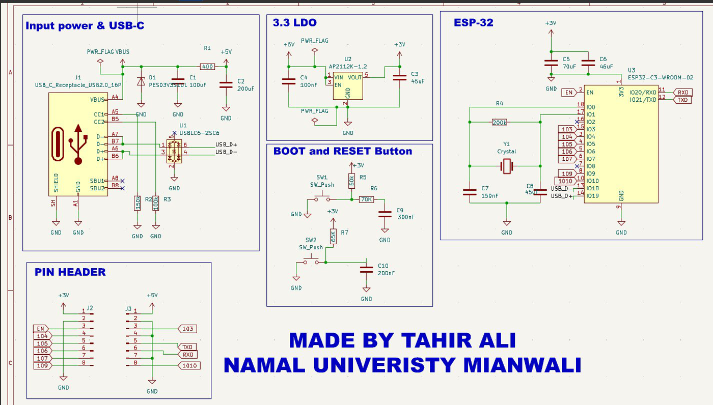
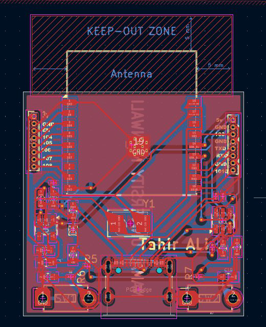
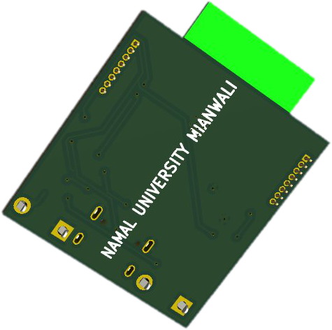

Home / Work / Custom ESP32 Dev Board
Custom ESP32 Development Board

- Tool
- KiCad
- Layers
- 2
- MCU
- ESP32 module
- Power in
- USB Type-C
- Regulator
- AP2112K-1.2 (3.3 V LDO)
- ESD protection
- USBLC6-2SC6
- Interfaces
- UART / SPI / I2C
- Verification
- DRC + ERC
01The challenge
A self-contained ESP32 platform that other firmware projects can be built on: USB Type-C for power and data, on-board regulation to 3.3 V, and the module's core interfaces exposed on GPIO headers.
02My role
- Schematic capture in KiCad
- Footprint placement and routing
- Ground plane and antenna keep-out
- DRC/ERC verification and manufacturing output
03Engineering approach
- Boot and reset push-buttons use RC filtering for debounce.
- Ground plane poured solid under the RF section, with a dedicated keep-out zone around the module antenna.
- ESD protection on the USB data lines (USBLC6-2SC6) and a 3.3 V AP2112K-1.2 LDO on board.
- UART, SPI and I2C broken out across full GPIO headers.
04PCB design
SchematicLayout3D board



05Verification
DRC and ERC were run and reviewed before fabrication output.
06Final output
- KiCad design files
- Manufacturing output prepared for JLCPCB, PCBWay and OSHPark
07Project result
A complete 2-layer development board taken from schematic capture through to verified manufacturing output.